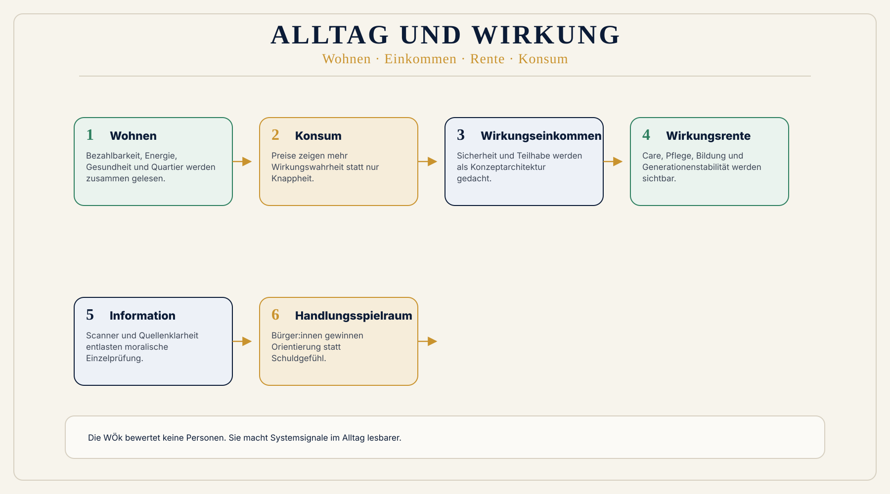

Was läuft heute falsch?
Verantwortung wird häufig auf Einzelne verschoben, obwohl das System selbst Schäden unsichtbar oder billig macht.
 Wirkungsökonomie
Wirkungsökonomie
Für wen · Warum zuerst
Warum bessere Systemsignale mehr entlasten als moralische Dauerappelle.
Bürger:innen sollen ständig richtig konsumieren, richtig wählen und richtige Informationen erkennen, obwohl Preise, Werbung und Politik oft falsche Signale senden.
Warum diese Seite wichtig ist
Verantwortung wird häufig auf Einzelne verschoben, obwohl das System selbst Schäden unsichtbar oder billig macht.
Moralische Appelle, Label und individuelle Kaufberatung reichen nicht, wenn Preise und Informationen die eigentliche Wirkung nicht zeigen.
Bürger:innen brauchen die WÖk, weil Wirkung im System sichtbar werden muss: in Preisen, Produktdaten, politischer Kommunikation und öffentlichen Entscheidungen.
Wirkung wird im System sichtbar: Preise, Daten, Scanner, Politik und Produkte werden lesbarer.
Was heute falsch läuft
Schädliche Folgekosten bleiben oft unsichtbar, während verantwortliche Alternativen teurer wirken.
Niemand kann bei jedem Einkauf Lieferketten, Klima, Gesundheit und Arbeit prüfen.
Einzelne sollen Fehler ausgleichen, die aus falschen Systemanreizen entstehen.
Politische Sprache und Plattformlogik erschweren Orientierung und Vertrauen.
Warum WÖk besser ist
Die WÖk dreht die Überforderung um: Nicht Bürger:innen müssen alles allein prüfen. Produkte, Preise, Programme und Aussagen sollen Wirkung klarer sichtbar machen.
Konkreter Nutzen
Wirkung wird lesbarer, ohne dass jede Person Expert:in für Lieferketten werden muss.
Preise können stärker zeigen, ob Folgekosten ausgelagert werden.
Quellen, Produktdaten und Wirkungspfade helfen bei Alltag und politischer Orientierung.
Gutes Handeln wird leichter, wenn das System bessere Signale sendet.
Vorher / Nachher
Heute
Du sollst richtig handeln, obwohl das System falsche Signale sendet.
Wirkungsökonomie
Das System sendet bessere Signale, damit gutes Handeln leichter wird.
Heute
Billig wirkt oft gut, obwohl Schäden ausgelagert sind.
Wirkungsökonomie
Preise tragen mehr Wirkungswahrheit.
Heute
Maßnahmen wirken oft abstrakt oder widersprüchlich.
Wirkungsökonomie
Wirkungspfade machen Entscheidungen nachvollziehbarer.
Wirkungspfad
Der Wirkungspfad kommt erst nach dem Warum: Er zeigt, wie Problem, Daten, Bewertung und Rückkopplung praktisch verbunden werden.

Konkretes Beispiel
Ein Produkt wirkt billig, weil Wasserstress, CO2, Arbeitsbedingungen oder Gesundheitsrisiken nicht sichtbar im Preis liegen. Die WÖk macht diese Wirkung sichtbar.
Was nicht passiert
Die WÖk bewertet keine privaten Lebensentwürfe.
Personen werden nicht bewertet; analysiert werden Produkte, Maßnahmen und Wirkungspfade.
Niemand muss alles richtig machen. Das System soll bessere Orientierung geben.
Erste Schritte
Ein Produkt, eine Aussage oder ein Programm als Wirkungspfad lesen.
Wirkung, Wirkungspotenzial und Quellenklarheit unterscheiden.
Nicht nur fragen, was versprochen wird, sondern welche Zustände sich ändern.
Vertiefung
Der erste Schritt ist kein perfekter Umbau, sondern eine prüfbare Wirkungsfrage.
Evidenz / Stand